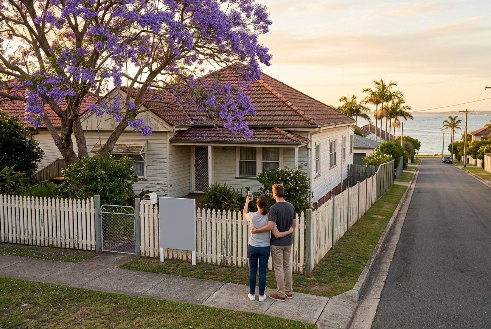

Your questions answered · Knockdown rebuild
Buying an old house in Wynnum or Manly
to knock down: what to check before you sign.
If you're buying the house for the block, the house doesn't matter and the block matters completely. Most of what decides whether a rebuild will work is public and free to check before you sign. Here's the list a builder would run on it, in order.
 Nathan Brain, carpenter and builder at Sabre
17 September 2026
6 min read
Nathan Brain, carpenter and builder at Sabre
17 September 2026
6 min read

Eight checks before you signBuying to knock down1 and 2: the year, and the character overlay
Do these first, together, because between them they decide whether the house can come down at all.
Council's demolition rules say planning approval is needed to demolish a building in the traditional building character overlay if the whole building was built before 1947, and for anything in the pre-1911 overlay or on a heritage register. Approval isn't automatic. If the house is genuinely pre-1947 and the street is in the overlay, you may be buying a renovation.
How to check the street takes five minutes. The year comes from council's archives, or from the agent if they can prove it. Don't take “1950s” on trust; ask for the source. The rules themselves are here.
3: the flood report
Pull council's FloodWise Property Report on the address. It's free and it takes a minute. It tells you which kinds of flooding council maps on the lot, the flood levels, and the minimum habitable floor level a new house would have to meet.
A flood overlay rarely stops a Bayside rebuild. It does decide whether the house you're imagining is the house you'd get: a lot with a high minimum floor level is a highset house or a house with the garage downstairs, not a lowset one. What that changes is here.
4: the trees
Brisbane protects mature or prominent trees on private land under its Natural Assets Local Law, and it's an offence to remove or lop a protected one without a permit. Ask council for a protected vegetation report on the property. If the big tree in the middle of the block is on it, the design will bend around it. More here.
5: slope and access
Stand on the footpath and look.
- Which way does the block fall, and how much? A slope toward the bay means a highset or split design, retaining, or cut and fill. All real work, all before the house.
- How wide is the frontage, and what's in it? Power lines, a street tree, a narrow crossover and a neighbour built to the boundary change what machinery gets in and how materials arrive.
- Where would the excavator go? If the answer is “through the neighbour's yard,” that's a conversation you want before you own the block.
6: the ground
You can't drill a soil test on a block you don't own, but you can read the signs. Cracked slabs under the old house, stumps that have moved, doors that bind, and a low, flat block near a creek or the foreshore all hint at reactive clay or fill. Old fill is common on the flats behind the esplanade. The test comes after settlement; the hints come before. What the test does is here.
7: boundaries, easements and services
Get the title search and the survey plan. Look for easements (a sewer main across the back corner limits where you can build), the position of the sewer and stormwater connections, and whether the fences are actually on the boundaries. On old Bayside blocks they often aren't. Ask where the old septic was, if the house predates the sewer.
8: the contract
This is where you protect yourself, and it's a conversation with your solicitor, not us. The principle is simple: if a check can't be finished before you sign, make the contract conditional on it. A building and pest inspection is normal; on a knockdown, the inspection you care about is different, and we've written about that separately. What you want is the freedom to walk away if the overlay, the flood report or the soil turns out to be something other than you were told.
“Before committing, check the contractor's licence and history via the QBCC Online Licence Search or by calling the QBCC.” The same habit applies to the block: check the public record before you commit, not after.
Queensland Building and Construction Commission, Consumer Building Guide, version 3, effective July 2023. It's about builders, and it's the right instinct for buying too.
Common questions
The listing says “knockdown rebuild opportunity.” Can we rely on that?
No. It's an agent's description, not a council approval. Check the year and the overlay yourself; it takes minutes and it's the check that matters most.
Can a builder look at the block before we buy?
Yes, and it's the best hour you'll spend. Nathan walks blocks that are on the market. He'll tell you what the slope, the access and the overlays would do to a design, and what he'd want to know before you sign.
What if the house is pre-1947 but we'd like to keep it anyway?
Then the overlay is on your side. A renovation of a character house at the back and underneath is usually simpler than changing the front. Different job, different post: rebuild or renovate is here.
Is a house with asbestos a reason not to buy?
On the Bayside it's most houses built before 1990, so no. It's a known job with licensed removal before demolition. It's a cost, not a barrier.
Sources: Brisbane City Council, Demolition or removal, Protected vegetation, FloodWise Property Reports; Brisbane City Plan 2014; Queensland Building and Construction Commission, Consumer Building Guide v3. Read 17 September 2026. This is a plain-English guide from a builder, not legal, conveyancing or financial advice. Talk to your solicitor about contract conditions.
Where most families start
A walk through your house with Nathan.
Thinking about a block that's on the market? Nathan will walk it with you before you make an offer, and tell you what it would and wouldn't let you build.
Book your walk-through with Nathan Call 0422 831 306
Already thinking about a rebuild? The free block check is on the same page.